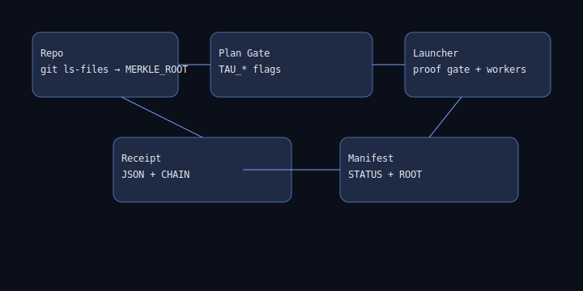

See README, manifest, and attestation.txt.

TAG=v0.1.0
FILE=tau_crystal-$TAG.tgz
DIGEST=sha256:
cosign verify-attestation --type cyclonedx \
--certificate-oidc-issuer 'https://token.actions.githubusercontent.com' \
--certificate-identity 'https://github.com/towre676-cloud/tau_crystal/.github/workflows/release.yml@refs/tags/$TAG' \
ghcr.io/towre676-cloud/tau_crystal@$DIGEST
cosign verify-blob --certificate "$FILE.cert" --signature "$FILE.sig" "$FILE"